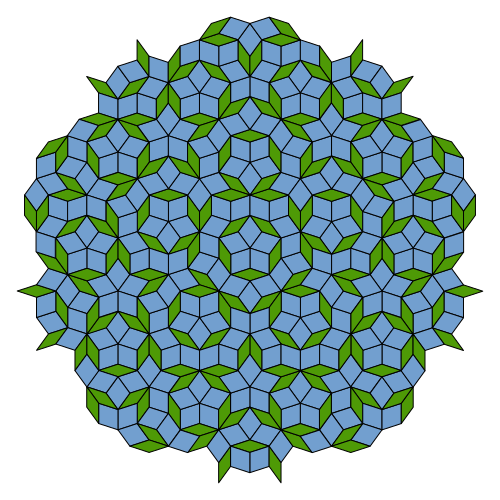
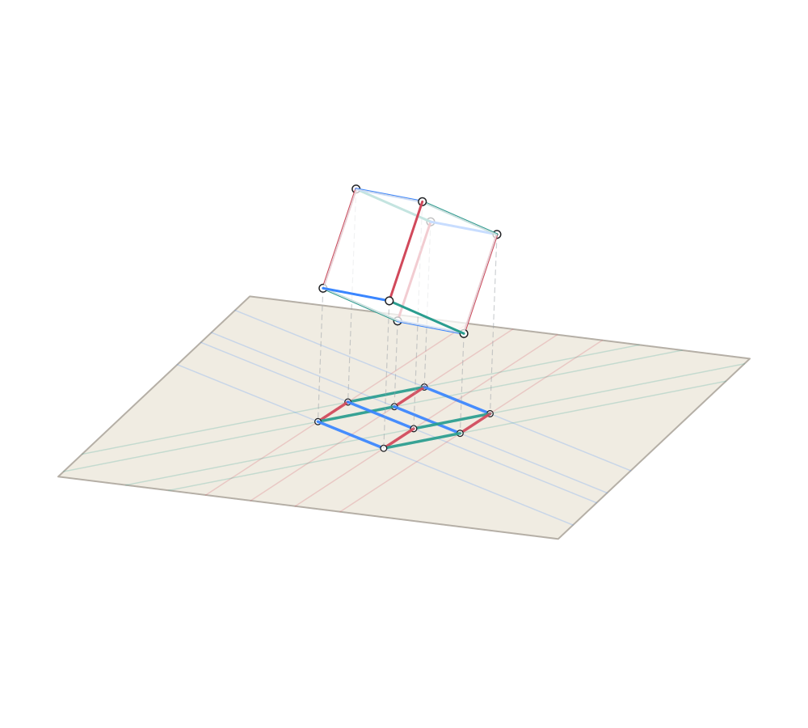
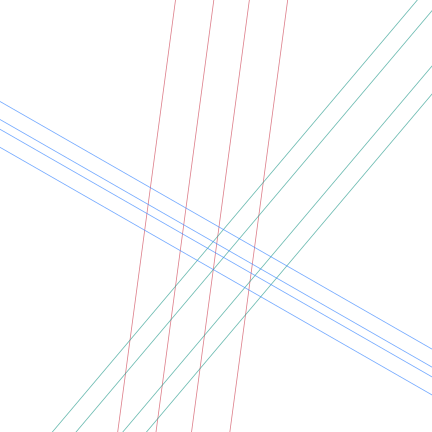
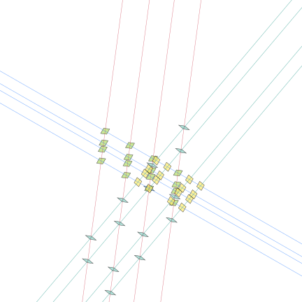
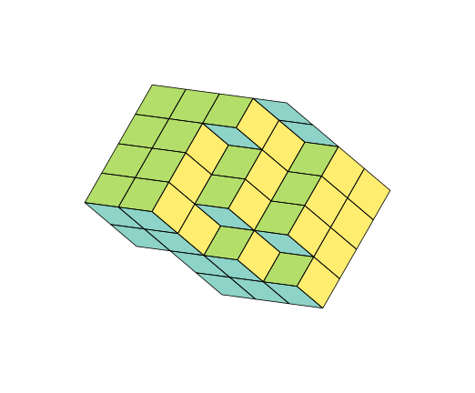
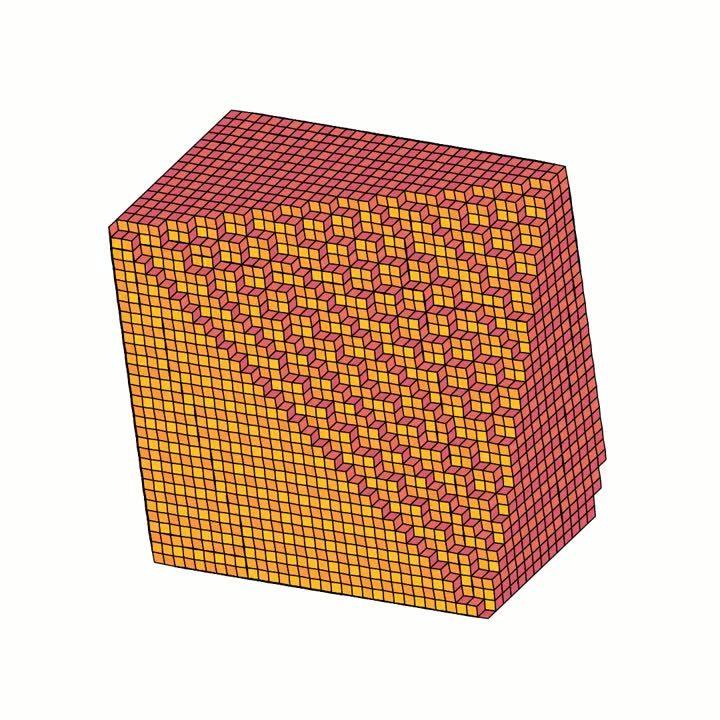
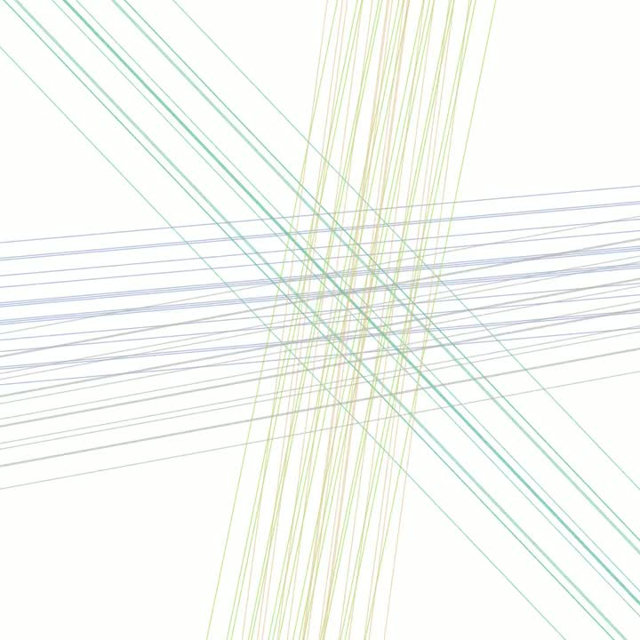

De Bruijn Tilings
Generating Penrose-ish tilings from from hypercube projections and grid intersections.

python main.py -N 25 --box-width 6 --box-height 3
In the 1970s, Roger Penrose explored many tilings, eventually finding a tiling with a few interesting properties: it only requires two shapes, it is aperiodic (no translational symmetry), has reflection symmetry, and has fivefold rotational symmetry. These are now known as Penrose tilings:

Here, we will present an algorithm for constructing these tilings, and generalize it to higher dimensions. All code to generate it is here.
Generating tilings from parallel lines
In 1981, N. G. de Bruijn discovered that these Penrose tilings can be constructed with a simple formula:
- Draw \(N\) families of parallel lines at evenly spaced angles. For a Penrose tiling, \(N=5\) gives families at \(180/5 = 36^\circ\) apart. Each family has lines at integer spacings, slightly offset so that no three lines ever meet at the same point.
- Draw rhombi at each intersection: the angle between the two intersecting lines determines the rhombus. The rhombus edges are unit-length, perpendicular to the two crossing families. With \(N=5\) families, only two shapes appear: a wide rhombus \((72^\circ)\) and a thin rhombus \((36^\circ)\).
- Assemble the tiling by placing rhombi edge-to-edge, walking outward from a seed via BFS along shared grid lines. The result is a gap-free, overlap-free aperiodic tiling of the plane.
This gives many valid Penrose tilings, as shown below. But what happens if we vary this algorithm slightly? Below, the slider shows what happens as you vary \(N\).


Assembly walkthrough
The key insight is that the grid lines encode all the combinatorial information needed to tile the plane. Here is that process animated step by step:


Why it works: the offset trick
Each line in family \(j\) satisfies:
Two lines from different families always intersect at exactly one point (someone should try non-Euclidean tilings!). But if three lines meet at the same point, the construction breaks — we'd get an ambiguous vertex. De Bruijn showed this can never happen if the offsets are all rational, distinct, and no two sum to an integer. The proof is elegant: at a triple intersection, certain ratios of cosines would need to be rational, but values produce only irrational ratios (or unity, which distinct offsets exclude).
Generalizations
The method generalizes beyond \(N=5\). Any \(N \ge 3\) produces a valid tiling with \(\lfloor N/2 \rfloor\) distinct rhombus types. Higher \(N\) yields increasingly intricate patterns with higher-order rotational symmetry.
Generating tilings from hypercubes
Given that an \(N\)-dimensional hypercube gives \(N\) families of parallel lines, what happens if we place rhombi at the intersections of the projection of a hypercube?
Let's start in 3D:
- Project a cube from 3D onto a 2D surface via a random orthonormal basis.
- Extract parallel lines from the projected edges — the cube's three edge directions become three families of parallel lines.
- Draw rhombi at each intersection, just as before.
- Assemble the tiling by joining neighboring rhombi edge-to-edge.

→
→
→
This generalizes: an \(N\)-dimensional hypercube has \(N\) families of parallel edges. Projecting onto 2D via a random orthonormal basis gives \(N\) families of parallel lines — exactly the input our tiling algorithm needs. Well, almost the input our tiling algorithm needs: the spacing between lines in each family is not uniform.
So, if we project a \(5\)D hypercube, we are close to a Penrose tiling, but it isn't quite correct because of the uneven spacing. However, one thing we can do is rotate the hypercube and visualize the tiling derived from its 2-d projection:


This was a quick tour of a weekend project to understand de Bruijn's paper on Penrose tilings. Please use the code below to further explore!
Generation code
Grid types
Beyond the classic regular grid, I messed around with a few other grid constructions:
- Regular — the classic de Bruijn grid. \(N\) families of parallel lines at angles \(j\pi/N\). Produces Penrose tilings when \(N=5\).
- Random — \(N\) completely random lines crossing the bounding box. Produces wild, asymmetric patches.
- Random-angle — \(N\) families with random orientations but regular parallel spacing within each family. A middle ground between structured and chaotic.
- Projection — projects the edges of an \(N\)-dimensional hypercube onto 2D via a random orthonormal basis. The parallel edges of the hypercube naturally form line families.

-G regular
-N 15 -G random
-G random-ang
-G projectionUsage
The code is at github.com/samacqua/tilings.
# Generate a classic Penrose tiling
python main.py -N 5 -B 5 -O out
# Try different grid types
python main.py -N 5 -G random -S 42 -O out/random
python main.py -N 5 -G projection -S 42 -O out/projection
# Higher-order symmetry
python main.py -N 12 -B 4 -O out/n12Each run produces SVGs of the grid, the rhombi at intersections, and the final assembled tiling. Rhombi are colored by their smallest internal angle, giving each distinct tile shape its own color.
References
- de Bruijn, N. G. (1981). “Algebraic theory of Penrose's non-periodic tilings of the plane”
- Penrose Tiling Explained — Preshing
- De Bruijn Tilings — Adam Ponting
- MathPages: Penrose Tiles